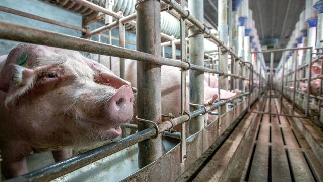

95后小伙除夕春节蹲守工厂三天，为湖北亲朋抢寄出上万个口罩 | 深网
原文链接 备份链接 作者 | 马关夏 出品｜深网·腾讯小满工作室 欢迎下载腾讯新闻APP，阅读更多优质资讯 这个春节，湖北武汉等地陆续发生新型冠状病毒感染的肺炎疫情牵动人心，面对严峻的防控形势，社会各方纷纷行动、驰援武汉。企业、明星捐钱捐 …
01.02.2020

本文字数：2386，阅读时长大约4分钟
导读：一般都是准备饲料到初五，尽管公司备货到初八，这两天也怕不够喂，已经采取限食举措，一天原本吃三顿，现在改成吃一顿。
作者 | 第一财经 邵海鹏
“现在不论是物流，还是私人罐车都不愿意跑湖北线路。”
1月31日，大年初七，听到办公室人员传递来的信息，王东湖（化名）心里非常焦急。养殖行业一般都是准备饲料到初五，尽管公司备货到初八，但这两天也怕不够喂，所以已经对存栏的5000头种猪限食，一天原本吃三顿，现在改成吃一顿。
王东湖是湖北扬翔农牧科技有限公司工作人员，该公司位于湖北省襄阳市。由于新冠肺炎疫情“封城”后交通受阻，养殖行业遭遇了最严重问题——饲料拉不过来了。
“猪年不好过，鼠年也不好过。”王东湖担心，如果把种猪都给饿死了，怎么保供给，恢复生产呢？

“封城”带来的后果
为防控疫情，1月23日自武汉开始，湖北省几乎所有地市都陆续“封城”。在控制人员流动的同时，客观上也影响了物资流通。
芝华数据研究总监袁松对第一财经记者表示，一方面是根据政策执行的主干交通的封锁，另一方面是民间自发的村级交通的封锁。饲料是持续消耗品，原料供应对物流依赖尤其严重，因此，交通的隔断，对需要持续不间断运转的养殖行业，冲击尤其大。
每年春节前后，物流都会暂停一段时间。根据行业惯例，饲料企业、养殖企业和养殖户都会提前预备一些饲料及原料。据行业人士介绍，一般长途物流暂停时间在半个月左右，即春节前一周至春节后一周。正月初七以后，长途物流会逐步恢复。短途物流暂停时间则较短。
袁松称，养殖场会根据自身条件和资金实力的不同，备货物资支撑时间的长短不同，一般支撑时间是在春节后一周以内。有些小养殖户，因为仓储和资金的限制，可能更多依赖经销商的备货，也就是春节期间也需要当地经销商通过短距物流来保障养殖场的饲料供应。而一些养殖企业也会为了减少运营成本，提高资金周转，而降低库存，从而依赖物流的稳定。
不仅是猪，还有鸡。
目前，湖北省大部分养鸡场的养殖量在几千羽到几万羽规模，库存最多的只能支撑到初七。从初二开始，就已经有养殖企业向主管部门申请办理运输车辆的通行证。到了初三，就已出现饲料运输车辆因村口道路被封，而无法将饲料送达养殖场的情况。也有养鸡场因为政府关闭活禽市场交易，后期销售无望，而提前将小鸡活埋处理，孵化到一半的鸡蛋做停孵处理。
中信建投期货农产品分析师姚桂玲对第一财经记者表示，根据湖北省内蛋鸡养殖户反映，饲料目前还有，但只能用最近几天。如果饲料原料不能及时补进，会影响到后续饲料供给，目前养殖户已经在减少喂料量。同时为防疫情，企业推迟开工，想淘鸡但也淘不了。
在鸡蛋销售方面，大部分湖北省养殖户的鸡蛋是省外销售。然而，由于交通不畅，南方销区对湖北鸡蛋和车辆、外来人员都有限制，目前加工企业的鸡蛋采购也受到影响，原来以湖北蛋为主要渠道的企业，也采购不到湖北鸡蛋了。
1月29日，中共湖北省委农办 湖北省农业农村厅发布《关于进一步积极配合做好新型冠状病毒感染肺炎疫情防控工作的通知》，强调重点建立“菜篮子”产品和饲料等生产投入品运输保障工作机制。
业内人士介绍，因铁路、水路、公路交通管制，全国各地到湖北省的饲料原料运输受阻，湖北省养殖企业的饲料和饲料企业的原料供应面临断档危险，形势急迫，特别是大规模畜禽养殖企业如饲料断供更易出现畜禽饿死冻死病死，甚至引发严重疫情。据不完全统计，目前全省库存的商品饲料仅够维持2-3天，从1月29日到2月底，全省饲料原料（豆粕、玉米等原料）缺口近60万吨。
“切断”但不是“一刀切”
“今天一早，我就安排人跟所有罐车司机打电话了，但一听说是去湖北，司机都不愿意去，增加运费也不行。”王东湖说。
外地司机的担心有多重：担心感染；也担心货装上了，省道过不去。就算过去了，担心从湖北回不来，那么车困在湖北的损失谁承担？人感染上了疫情责任谁承担？外地外地司机不敢来，湖北本省司机更是出不去。只要是湖北车牌、湖北身份证，外出拉饲料，在外省入境会受到阻碍。
基于扬翔防控非洲猪瘟的经验，王东湖认为，防控新冠肺炎可以采用“切断”的方法，但也不能一刀切。封路的目的是为了减少交叉感染，但是造成养殖场的畜禽没有饲料吃，就属于次生灾害。
袁松分析说，交通封锁带来的问题，主要有两方面：一是主干交通，水路和铁路的封锁导致大宗长途物流受阻。水路和铁路运输是饲料企业大宗原料物流的主要方式，但是封城导致以湖北主要城市，特别是作为交通枢纽的武汉为目的地的水路和铁路运输几乎完全停止。袁松说，公路运输情况相对好一些，在申请获得通行许可后，高速公路和主干道路可以通行。但公路运输主要用于产品销售。而且从时间和成本方面考虑，饲料企业是难以承受的。
二是村庄道路的封锁。这对养殖场也是致命影响。袁松说，一些村庄为防止人员流动，将村口公路完全截断，导致交通运输也被截断。养殖场的交通运输还是严重依赖村级公路的，远离村庄的养殖场在运输通道上也可能无法完全避开村庄。
此前，农业农村部、交通运输部等多部委也已经下发紧急通知，为维护“菜篮子”产品和农业生产资料正常流通秩序，“严禁未经批准擅自设卡、拦截、断路阻断交通等违法行为”，“对未经批准擅自设卡、拦截、断路等阻断交通等违法行为，地方交通运输部门要立即报告当地党委、政府，依法恢复正常交通秩序”。
在业内看来，目前实际执行上还存在差距。姚桂玲说，如果目前协调不好产销区的流通问题，后期产销区价格差应该会拉大、不均衡。她建议缩小政策和实际执行中的差距，也可采取点对点措施，解决产销区的供需矛盾问题，在防控的同时，保证农业生产少受影响。
袁松认为，应尽快打通物流，至少要保障饲料原料能够进入湖北省市县地。一方面是批准养殖相关的产品流通，各地检查环节对养殖相关产品能给予检查后放行的许可。同时，水运和铁路运输主体企业开通至湖北的运输通道，至少能够实现点对点运输。
【推荐阅读】
UP主实拍：“空城”武汉的物价、交通 、生活状态


原文链接 备份链接 作者 | 马关夏 出品｜深网·腾讯小满工作室 欢迎下载腾讯新闻APP，阅读更多优质资讯 这个春节，湖北武汉等地陆续发生新型冠状病毒感染的肺炎疫情牵动人心，面对严峻的防控形势，社会各方纷纷行动、驰援武汉。企业、明星捐钱捐 …
原文链接 备份链接 “我们说好，以后这个群不解散怎么样？” “好！疫情无情人有情，徐闻来结缘，永不解散！” 文 | 梁金宏、甘笠男、韩凤兰 编辑 | 小豆 最近广东湛江徐闻县超市里的老干妈和牛栏山白酒突然成了热销货，它们被志愿者装进最大号 …
原文链接 备份链接 【财新网】（记者 孙良滋 实习记者 单镭婧）受新冠肺炎疫情影响，湖北多地施行交通管制，当地家禽养殖业遭受波及。据财新记者了解，作为全国禽蛋供给大省，受交通管制影响，不少企业饲料告急，鸡蛋和鸡苗积压难以运输出去。目前， …
原文链接 备份链接 今天是武汉封城的第十天，也是二月份的第一天。 今天也仍旧是完全宅在家里的一天。武汉天气不算晴好，太阳偶尔露一脸，但因为闭门不出，所以也没觉得寒冷。所以那个终极问题：如果温度合适，食物充足，网速流畅，你究竟可以在家宅几 …
原文链接 备份链接 【财新网】（记者 贾天琼）2月1日13:31，南方航空CZ30001航班执行包机从广州出发前往泰国普吉岛接滞留当地的湖北籍旅客，返回航班CZ30002将从普吉岛直飞武汉。 截至发稿，民航已部署5个航班，共接送湖北籍 …